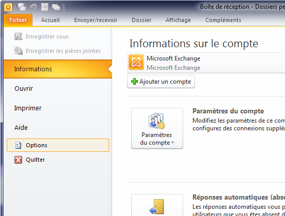
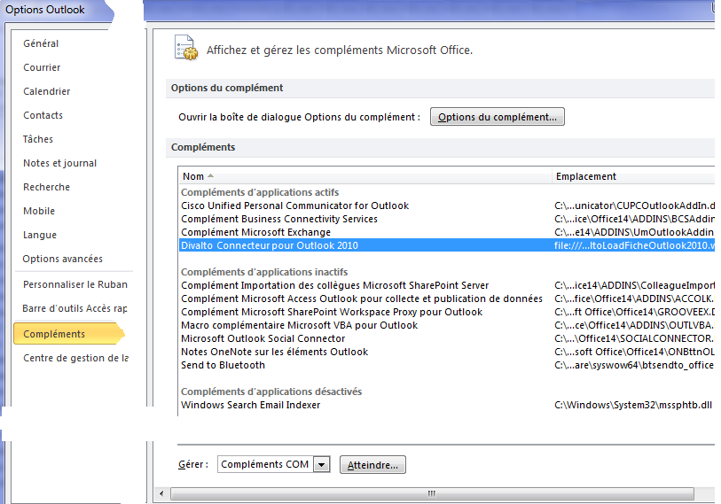
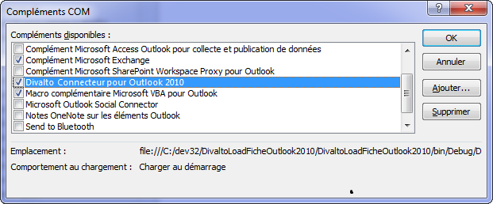

Le Connecteur s’installe dans les compléments d’Outlook. Pour voir cette liste, appelez le choix Fichier : Options : Compléments du menu de Outlook :


Remarque importante :
Si les boutons du connecteur Divalto pour Outlook ne s’affichent pas, vérifiez que le connecteur est bien dans la liste des compléments d’Outlook et qu’il est bien actif : Dans la fenêtre précédente, cliquez sur le bouton Atteindre… et, le cas échéant, réactivez la coche sur le complément "Divalto Connecteur pour Outlook" :
